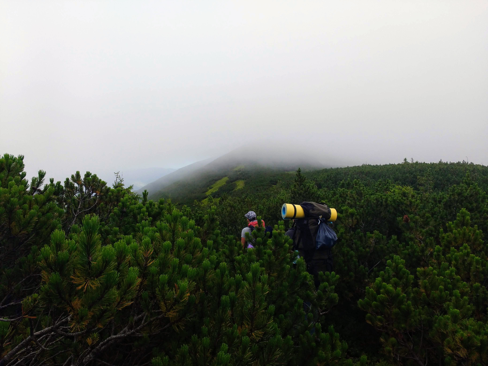

Існує універсальний мінімальний набір речей, який допоможе вам комфортно почуватися у різних умовах
Пам'ятаю, як більше десяти років тому пакування рюкзака для чергового походу було важливою подією. На це треба було виділити кілька годин, написати список усіх необхідних речей, скласти їх в купу посеред кімнати, засунути у рюкзак. Зрозумівши, що він надто важкий, розпаковути рюкзак знову, критично переглянути усі речі, відкинути щось зайве і пакувати знову. Тепер же ця процедура минає швидко і безболісно. Для тих, хто збирає свій перший (або ж десятий) рюкзак, пропоную зупинитися на основних речах, які знадобляться у пішому поході. Розглядати кожну річ детально не будемо (про це можна написати цілу книгу), зупинимося лише на основних параметрах.
Найголовніші речі
В першу чергу, нам знадобиться туристичний рюкзак, міцний і надійний, з твердою спинкою, міцним дном, надійними заплічними і поясним ременями. Перевірено на власному досвіді: нормальний туристичний рюкзак — найважливіша річ у поході (саме у пішому поході, хоча я навіть на пляжний чи екскурсійний відпочинок, в поїздки потягом чи польоти літаком беру рюкзак, а не валізу на колесах). До необхідних речей належать намет, туристичний килимок та спальник. Детальніше про них читайте у наступних публікаціях. Вибір взуття та одягу залежить від пори року і клімату. Головна вимога до взуття — зручність і надійність. Це можуть бути міцні трекінгові черевики або сандалі, в якості змінного взуття можна взяти легкі шльопанці.
З одягу слід взяти:
- дві футболки
- дві пари штанів
- дві кофти
- термобілизну
Для захисту від вітру та дощу потрібні:
- куртка або вітровка
- дощовик
- водонепроникна накидка на рюкзак
Поради
Можливо, щось із запропонованого списку буде зайвим для вас, а чогось, навпаки, не дістає. У будь-якому випадку, перед тим, як покласти якусь річ в рюкзак, тричі подумайте, наскільки вона необхідна, і чи не можна її замінити схожою, але легшою. Не тягніть важких книг, розкладних стільчиків, сокир та інших речей, без яких можна обійтися. Варто не лише не брати зайвих речей, а й усе, що взяли, пакувати компактно. Як це зробити, читайте у наступних публікаціях. І пам'ятайте, що кожного наступного разу пакувати рюкзак буде легше.